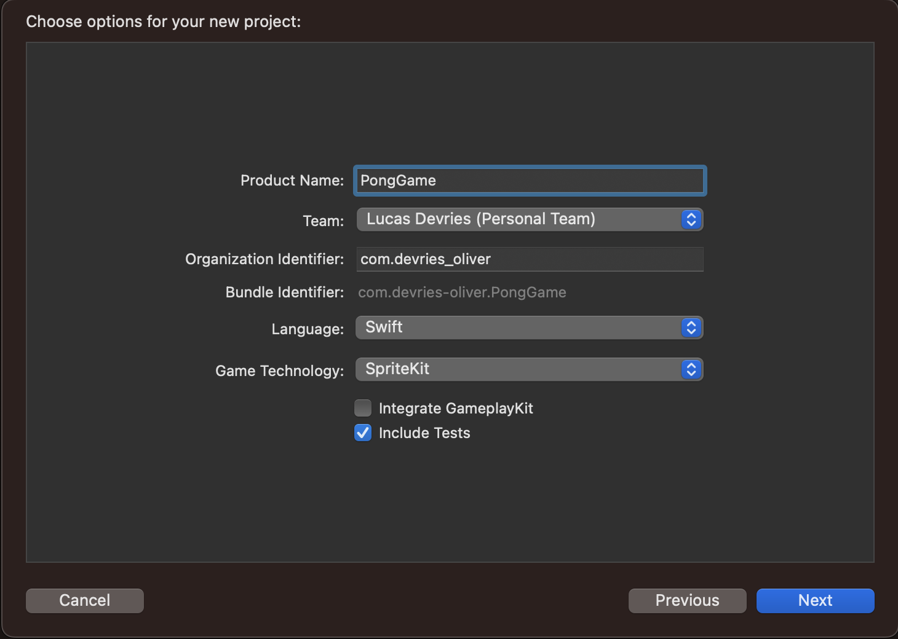
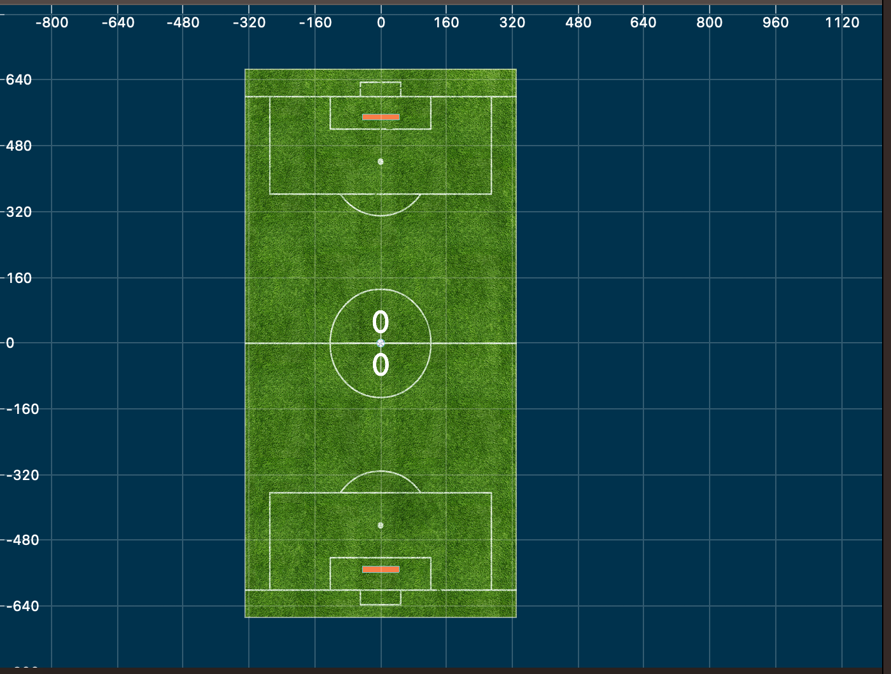
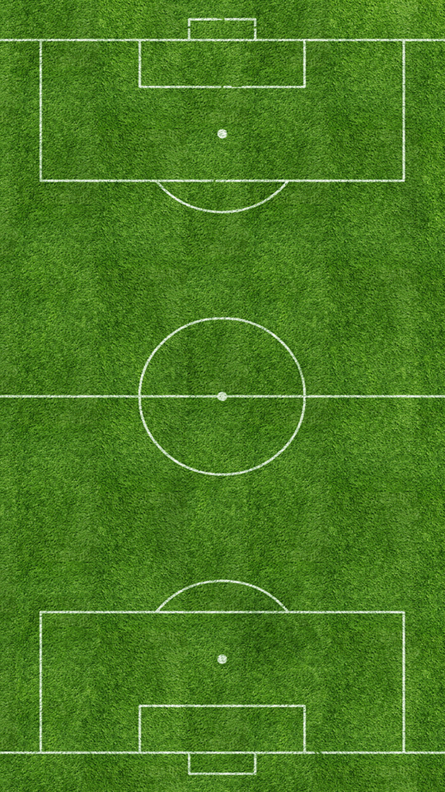
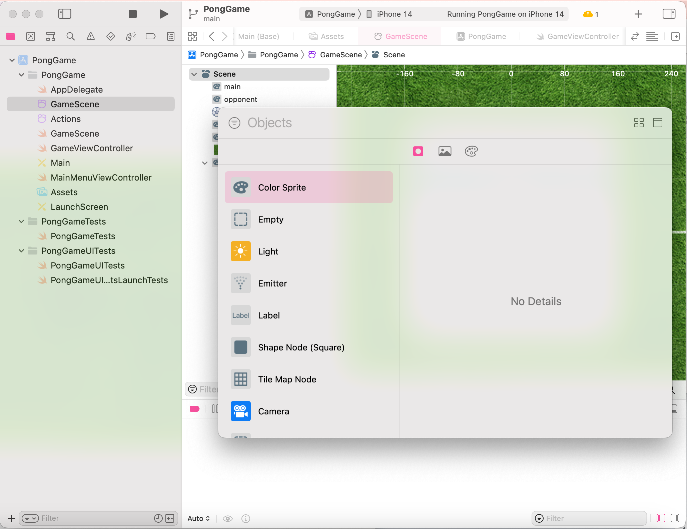
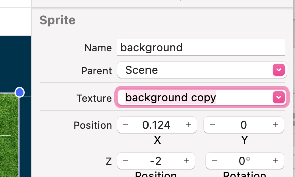
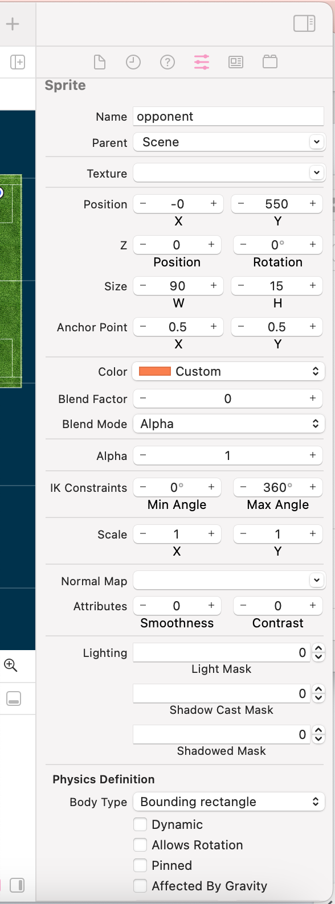

SpriteKit is an advanced and efficient framework tailored for creating 2D games and graphics on iOS, macOS, and tvOS platforms. Developed to support high-performance animations and graphics rendering, SpriteKit streamlines the game development workflow with its comprehensive suite of built-in features, which includes a robust 2D rendering engine, physics engine, particle systems, audio engine, and scene management functionalities. SpriteKit simplifies intricate tasks and provides a complete set of resources, empowering developers to concentrate on building captivating gameplay experiences for Apple devices.
In this tutorial, we will be harnessing the capabilities of SpriteKit to create a soccer-themed Pong game. This experience will combine the classic Pong mechanics with a soccer twist, featuring visually appealing graphics and multiple gameplay modes. By utilizing SpriteKit's extensive set of features, including the 2D rendering engine, physics engine, and scene management, we will demonstrate how to develop an entertaining game that runs seamlessly on iOS devices.
By following this tutorial, you will gain a deeper understanding of SpriteKit's functionality and learn how to effectively leverage its features in creating your own captivating 2D games.
For this tutorial we used Xcode Version 14.2 with the IOS Deployment target being 16.2
To download Xcode you will need a Mac computer, you can either download the software directly from the Mac App Store or you can download the file directly from Apple here: https://developer.apple.com/download/all/?q=Xcode
To get started, open Xcode and pick the option to create a new project, make sure to select SpriteKit as the Game Technology as pictured below.
In this in-depth tutorial you will learn to create a simple implementation of this game. From there you will have the ability to add additional features on your own such as a score board, game over screen, and multiple gameplay modes and difficulties.
From here you will have a GameScene file where you can add objects. In the next few steps we are going to create the scene pictured below.
You can use the same image assets as we do for your project (attached below), or upload your own background and ball to customize your design. Either way you will need to add both the image for the ball and background to your Xcode project’s Assets folder.
Now open the GameScene file. You will create a colorSprite for each of the following elements: background, main paddle, opponent paddle, and ball. To do this use the plus button in the top right corner of your Xcode editor as pictured.
To add your image assets to the background and paddle select the image file from the dropdown that will appear in the “Texture” setting
To create the paddles give the ColorSprites a body type of a “bounding rectangle” in the physics definition section. This will allow the ball to bounce off of our paddle sprites rather than passing through them.
Once you have created and placed all of these elements in the GameScene we can exit the UI editor and open the code for our GameScene.swift file.
Before diving into the implementation, make sure you have imported the necessary libraries at the beginning of your GameScene.swift file:
import SpriteKit
import GameplayKit
Create a class called GameScene, which will inherit from SKScene. This class will be the backbone of our game, containing all the necessary variables and functions.
class GameScene: SKScene {
// Add the variables and functions here
}
Declare variables for the ball, opponent, and player within the GameScene class:
var ball = SKSpriteNode()
var opponent = SKSpriteNode()
var player = SKSpriteNode()
var background = SKSpriteNode()
This function is called when the scene is presented. Set up the game elements such as the background and player positions. Additionally, set up the screen edges' physics and call the start() function to begin the game.
override func didMove(to view: SKView) {
// Configure the background by setting its size and position
background = self.childNode(withName: "background") as! SKSpriteNode
background.size.height = self.frame.height
background.size.width = self.frame.width
// Configure the player and opponent sprites
player = self.childNode(withName: "main") as! SKSpriteNode
player.position.y = (-self.frame.height / 2) + 50
opponent = self.childNode(withName: "opponent") as! SKSpriteNode
opponent.position.y = (self.frame.height / 2) - 50
// Set up the ball sprite
ball = self.childNode(withName: "ball") as! SKSpriteNode
// Set up the screen edges physics
let edge = SKPhysicsBody(edgeLoopFrom: self.frame)
edge.friction = 0
edge.restitution = 1
self.physicsBody = edge
// Start the game
start()
}
Create the start() function that initializes the game, including applying an impulse to the ball.
func start() {
// Apply an impulse to the ball to set it in motion
ball.physicsBody?.applyImpulse(CGVector(dx: 18, dy: 18))
}
Override the touchesBegan(_ touches: Set
override func touchesBegan(_ touches: Set, with event: UIEvent?) { for touch in touches { let location = touch.location(in: self) player.run(SKAction.moveTo(x: location.x, duration: 0.1)) } } override func touchesMoved(_ touches: Set , with event: UIEvent?) { for touch in touches { let location = touch.location(in: self) player.run(SKAction.moveTo(x: location.x, duration: 0.1)) } }
This function is called before each frame is rendered. Add code to handle the opponent's movement
override func update(_ currentTime: TimeInterval) {
opponent.run(SKAction.moveTo(x: ball.position.x, duration: 0.1))
}
Detect when the ball goes off-screen and update the score accordingly. Then reset the ball's position and velocity.
func scorePoint(scoringPlayer : SKSpriteNode) {
ball.position = CGPoint(x: 0, y: 0)
ball.physicsBody?.velocity = CGVector(dx: 0, dy: 0)
if scoringPlayer == player {
ball.physicsBody?.applyImpulse(CGVector(dx: 18, dy: 18))
} else if scoringPlayer == opponent {
ball.physicsBody?.applyImpulse(CGVector(dx: -18, dy: -18))
}
}
override func update(_ currentTime: TimeInterval) {
opponent.run(SKAction.moveTo(x: ball.position.x, duration: 0.1))
if ball.position.y <= player.position.y - 30 {
scorePoint(scoringPlayer: opponent)
} else if ball.position.y >= opponent.position.y + 30 {
scorePoint(scoringPlayer: player)
}
}
In conclusion, this tutorial has demonstrated the process of creating a soccer-themed Pong game using SpriteKit, showcasing the framework's potential in developing engaging 2D games for Apple devices. While we have focused on the native features offered by SpriteKit, alternative approaches such as using third-party game engines like Unity or Cocos2d could be explored for similar game development tasks. However, SpriteKit's seamless integration with Apple platforms and its rich set of built-in features make it a compelling choice for developers targeting iOS.
For further study, you might want to explore other platform features and tools, such as SceneKit for 3D game development, ARKit for augmented reality experiences, and Game Center for incorporating social gaming elements like leaderboards and achievements. By delving deeper into these related technologies, you can enhance your skill set and create even more captivating experiences for players.
https://www.kodeco.com/71-spritekit-tutorial-for-beginners https://developer.apple.com/spritekit/ https://www.createwithswift.com/using-spritekit-in-a-swiftui-project/